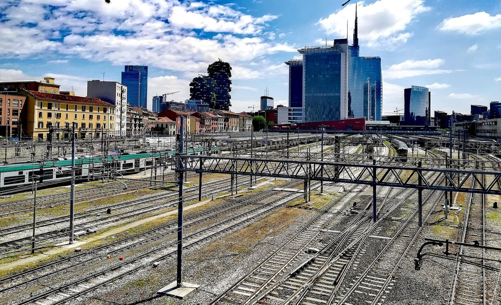

Perché conta: Un dato debole sull'occupazione americana ha fatto scendere le probabilità di un nuovo rialzo dei tassi da parte della Federal Reserve a ottobre. Quando il mercato si convince che i tassi non saliranno, i rendimenti delle obbligazioni scendono — e a beneficiarne è soprattutto un paese molto indebitato come l'Italia. È il motivo per cui oggi lo spread è scivolato e le banche hanno smesso di perdere.
Dopo la giornata nera del 1° ottobre, la Borsa di Milano ritrova la via del rialzo. Il FTSE MIB chiude a 50.483 punti, in crescita dello +0,49%, riportandosi sopra la soglia psicologica dei 50.000 punti. Il recupero arriva dopo il −2,21% della vigilia e si accompagna a una netta distensione sul fronte del debito: lo spread BTP-Bund chiude a 114,6 punti base, in discesa dai circa 126 punti toccati in avvio di seduta. Il motore del rimbalzo arriva da fuori: il Jobs Report (rapporto sull'occupazione) americano di settembre, molto più debole del previsto.
Il dato americano che ha cambiato la seduta
A muovere i mercati di tutta Europa è stato il dato sui Nonfarm Payrolls (occupati non agricoli) pubblicato dal Bureau of Labor Statistics americano. A settembre l'economia statunitense ha creato 29.000 posti di lavoro, contro i 90.000 attesi dal consenso degli economisti. Il tasso di disoccupazione è salito al 4,2%, dal 4,1% precedente, mentre gli analisti lo attendevano stabile. A rendere il quadro ancora più debole, i dati dei mesi precedenti sono stati corretti al ribasso per complessivi 60.000 posti.
Il collegamento con Piazza Affari passa dalla politica monetaria. Il 16 settembre 2026 la Federal Reserve aveva alzato i tassi di 25 punti base — il primo rialzo in oltre tre anni, deciso con un voto unanime di 12 a 0 — portando il costo del denaro nella fascia 3,75%-4,00%. Il mercato temeva una replica a ottobre. Con un mercato del lavoro che rallenta così visibilmente, quelle scommesse si sono rapidamente ridimensionate: è il fenomeno che in gergo si chiama paring back (ridimensionamento delle scommesse).
💡 Impara: Nonfarm Payrolls (occupati non agricoli)
I Nonfarm Payrolls sono il numero di posti di lavoro creati o perduti ogni mese negli Stati Uniti, esclusi il settore agricolo, i lavoratori autonomi e i dipendenti pubblici locali. Vengono pubblicati il primo venerdì del mese e sono considerati il singolo dato macroeconomico più importante al mondo: misurano in tempo quasi reale la salute della più grande economia del pianeta. Un numero più basso delle attese segnala un'economia che rallenta e quindi, paradossalmente, può far salire le Borse: se l'economia frena, la banca centrale ha meno bisogno di alzare i tassi per raffreddare l'inflazione.
Lo spread BTP-Bund: dalla fiammata iniziale alla chiusura a 114,6
La seduta dello spread è stata un'altalena. Il differenziale tra BTP (Buoni del Tesoro Poliennali) italiano e Bund tedesco a 10 anni ha aperto a 126 punti base, è poi rientrato verso 118, per risalire fino a un picco di 131 punti base sulla scia delle tensioni sul mercato obbligazionario europeo. Con l'arrivo del dato americano nel pomeriggio la pressione si è allentata di colpo e il differenziale ha chiuso a 114,6 punti base — ben sotto i 118,5 punti della chiusura precedente.
Il contesto europeo resta però tutt'altro che tranquillo, e il problema oggi non è Roma ma Parigi. L'OAT francese a 10 anni (Obligation Assimilable du Trésor, il titolo di stato francese) ha chiuso con un rendimento del 4,92%, ai massimi da 18 anni, con un differenziale verso il Bund arrivato fino a circa 140 punti base. I gestori hanno venduto obbligazioni francesi per comprare Bund tedeschi, in un classico movimento di flight to quality (fuga verso la qualità). Per una volta, l'Italia non è l'anello debole della catena.
| Indice / Strumento | Valore 2 ottobre | Variazione giorno |
|---|---|---|
| FTSE MIB | 50.483 punti | +0,49% |
| DAX 40 (Francoforte) | — | +1,10% |
| CAC 40 (Parigi) | — | +0,90% |
| Spread BTP-Bund | 114,6 pb | −3,9 pb |
| OAT Francia 10 anni (rendimento) | 4,92% | massimi da 18 anni |
Semiconduttori in rally: STM, Technoprobe e Prysmian guidano il listino
Il traino del FTSE MIB è venuto dai titoli tecnologici legati ai chip, sulla scia del rimbalzo del comparto a Wall Street. Il settore dei semiconduttori europeo ha guadagnato circa l'1,1%, con il tedesco Infineon in evidenza a +8,2% grazie alle prospettive di crescita dei ricavi 2026 legate all'intelligenza artificiale.
A Milano la migliore del listino principale è stata STMicroelectronics con un +6,67%, seguita da Technoprobe a +5,99% e da Prysmian a +3,96%. A dare la spinta iniziale sono stati i rialzi di AMD (+4,68%) e Intel (+4,1%) sul Nasdaq. Da segnalare che la seduta non è stata lineare: a metà giornata l'indice era girato in territorio negativo (−0,03%), appesantito dalle banche, prima di recuperare nel finale.
| Titolo | Settore | Variazione giorno |
|---|---|---|
| STMicroelectronics | Semiconduttori | +6,67% |
| Technoprobe | Collaudo chip | +5,99% |
| Prysmian | Cavi e reti | +3,96% |
| Infineon (Francoforte) | Semiconduttori | +8,20% |
💡 Impara: Relief Rally (rally di sollievo)
Un Relief Rally è un rimbalzo dei prezzi che nasce non da una buona notizia, ma dal venir meno di una brutta notizia attesa. La seduta del 2 ottobre è un esempio da manuale: i dati sull'occupazione americana erano oggettivamente deboli — meno posti di lavoro, più disoccupati — ma le Borse sono salite perché quel rallentamento riduce la probabilità di un nuovo rialzo dei tassi. Il mercato non ha festeggiato l'economia: ha festeggiato il fatto che la banca centrale avrà le mani legate. È una dinamica che spiega perché, in certe fasi, "cattive notizie" sull'economia diventino "buone notizie" per chi investe in azioni.
Cosa osservare nelle prossime sedute
Tre fronti meritano attenzione. Il primo è la riunione della Federal Reserve di ottobre: se il mercato ha ragione e il rialzo non arriverà, la distensione sui rendimenti potrebbe continuare a sostenere i titoli di stato italiani. Il secondo è la Francia: con l'OAT ai massimi da 18 anni, un peggioramento della crisi del debito francese rischia di contagiare l'intero comparto obbligazionario europeo, Italia inclusa. Il terzo è la tenuta del rally dei chip, che negli ultimi mesi ha fatto da principale motore del FTSE MIB e che resta molto sensibile alle notizie sugli investimenti in intelligenza artificiale.
Da monitorare anche il settore bancario, che oggi è rimasto indietro rispetto al resto del listino: con uno spread in discesa, un recupero delle banche sarebbe il segnale che la distensione sul debito è considerata durevole e non solo un rimbalzo di giornata.